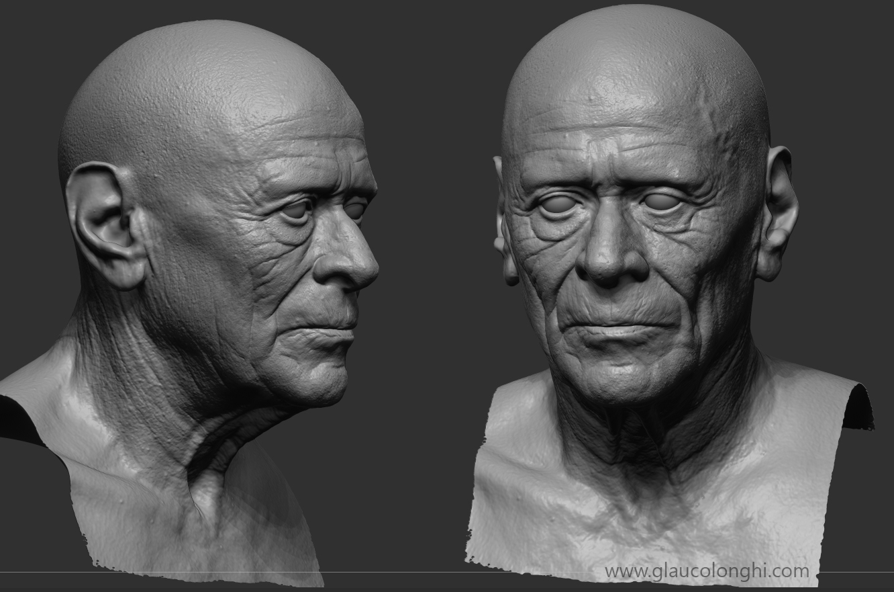

Retrato Proyecto personal para estudiar la cara femenina. Trabajé con diferentes técnicas en cuanto a los ojos y el pelo.
Junior 'Cigano' Dos Santos Retrato para llevar a la práctica diferentes técnicas que utilizo en cuanto a poses y anatomía.
Diseño de personajes Realizados mediante la escultura tradicional hace un par de años para el estudio personal.
 Estudio de la cara Modelos realizados para el estudio de la cara humana, así como son los rasgos de un anciano y expresión.
Textura de la ropa Una vez realizado el anterior modelo, aproveché para estudiar el tejido de la ropa.
Encargo Encargo realizado para una empresa de animación cuyo fin iba destinado a la producción de un corto.
Vikingo Inspirado en la serie protagonizada por Ragnar Lothbrok, me lancé a realizar un modelo con tales rasgos.